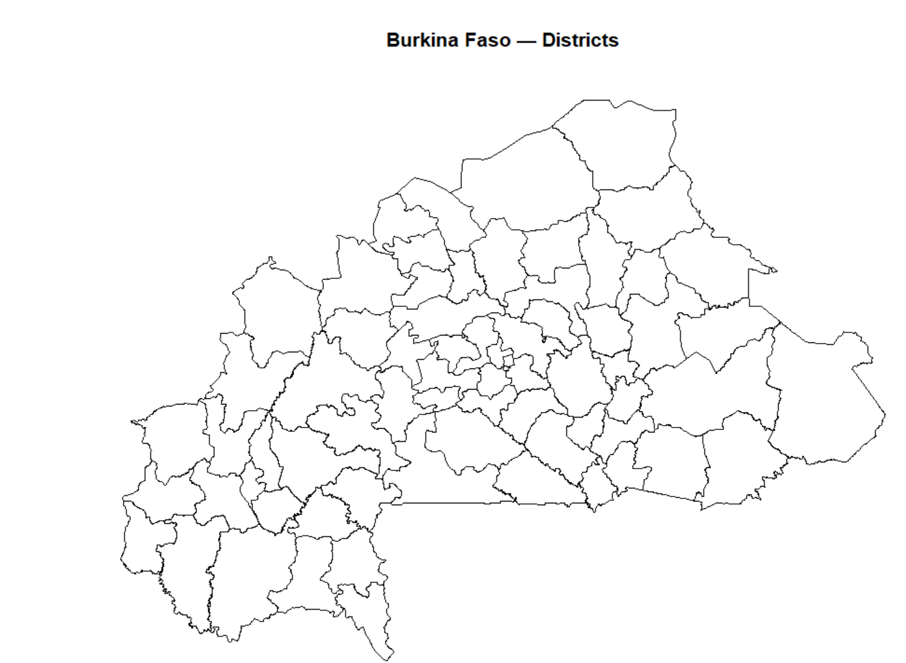
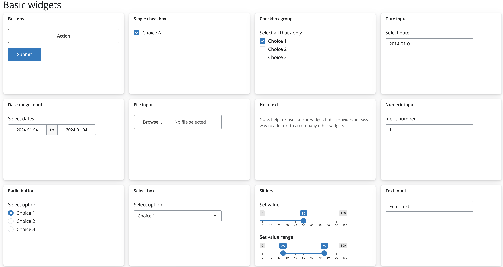

pkgs <- c("shiny", "bslib", "tidyverse",
"leaflet", "sf", "plotly",
"DT", "bsicons", "scales")
install.packages(
pkgs[!pkgs %in% rownames(installed.packages())]
)Building Interactive Malaria Dashboards with R Shiny
1 Setup
1.1 Create a project folder
Before writing any code, set up a clean project structure in RStudio:
File → New Project → New Directory → New Project
Name it malaria-shiny-hackathon and choose a sensible location on your computer.
Your project should have the following structure:
malaria-shiny-hackathon/
├── app.R ← your Shiny app (create this)
├── data/ ← provided datasets go here
└── www/ ← logo and images go here1.2 Required packages
Run this once in your console to install any missing packages:
Then load them at the top of every session:
library(shiny)
library(bslib)
library(tidyverse)
library(leaflet)
library(sf)
library(plotly)
library(DT)
library(bsicons)
library(scales)1.3 Training dataset
For this session you will use a pre-prepared dataset for Burkina Faso covering 2020–2023. The dataset uses the real Burkina Faso district shapefile from the Malaria Atlas Project, with simulated malaria and intervention indicators that reflect realistic epidemiological patterns for the country.
ImportantDownload the training data
Download the three .rds files from the link below and save them into your project’s data/ folder before starting:
Your data/ folder should contain:
malaria_data.rds— monthly data for all districtsannual_summary.rds— annual KPI summariesbfa_districts.rds— Burkina Faso district shapefile
1.4 Load the data
At the top of your app.R, after loading packages, add:
# load training datasets
malaria_data <- readRDS("data/malaria_data.rds")
annual_df <- readRDS("data/annual_summary.rds")
district_shp <- readRDS("data/bfa_districts.rds")1.5 Quick data check
Run this in your console to confirm everything loaded correctly:
# monthly data
glimpse(malaria_data)
# how many districts and years?
cat("Districts:", n_distinct(malaria_data$district), "\n")
cat("Regions:", n_distinct(malaria_data$region), "\n")
cat("Years:", unique(malaria_data$year), "\n")
cat("Months:", unique(malaria_data$month), "\n")
# shapefile check
plot(sf::st_geometry(district_shp),
main = "Burkina Faso — Districts")You should see:
- 45 districts across 13 regions
- 4 years × 12 months = 2,160 rows per district
- A map of Burkina Faso districts

NoteAbout this dataset
The shapefile is real — downloaded from the Malaria Atlas Project using the malariaAtlas R package. The incidence, rainfall, and ITN coverage values are simulated to reflect realistic epidemiological patterns for Burkina Faso:
- Higher burden in the south and southwest (wetter, higher transmission)
- Lower burden in the north and Sahel (drier, lower transmission)
- Rainfall peaks July–August (Sahel wet season)
- Malaria incidence peaks September–October (6-week lag behind rainfall)
- ITN coverage improves gradually 2020–2023
2 What is Shiny?
Shiny is an R package developed by Posit (formerly RStudio) that lets you build interactive web applications directly from R — no HTML, CSS, or JavaScript knowledge required.
2.1 Why Shiny for malaria data?
Malaria programmes generate large volumes of subnational data — district-level incidence, rainfall, intervention coverage, health facility access. Static plots and reports are useful but limited: they show one view, fixed at the time of rendering.
Shiny changes that. Instead of sending a programme manager a PDF with 50 district plots, you give them a dashboard where they can:
- Select their district and year
- Explore trends interactively
- Zoom into the map
- Download the data they need
This is the kind of tool we are building today.
2.2 What does a Shiny app look like?
At its simplest, a Shiny app is a single file called app.R that lives in its own folder. It has three parts:
NoteThe three parts of every Shiny app
1. UI (User Interface) Defines what the user sees — the layout, input controls (dropdowns, sliders), and placeholders for outputs (maps, plots, tables).
2. Server Defines what the app does — filters data, builds plots, computes summaries, and sends results back to the UI.
3. shinyApp() The function that ties UI and server together and launches the app.
Here is the simplest possible Shiny app:
library(shiny)
# 1. UI — what the user sees
ui <- fluidPage(
titlePanel("My first Shiny app"),
sidebarLayout(
sidebarPanel(
sliderInput(
inputId = "bins",
label = "Number of bins:",
min = 1, max = 50, value = 30
)
),
mainPanel(
plotOutput("histogram")
)
)
)
# 2. Server — what the app does
server <- function(input, output, session) {
output$histogram <- renderPlot({
hist(faithful$waiting,
breaks = input$bins,
col = "steelblue",
main = "Waiting times",
xlab = "Minutes")
})
}
# 3. Launch the app
shinyApp(ui, server)
TipTry it now
Copy the code above into a new app.R file, save it, and click Run App in RStudio. Move the slider watch the histogram update instantly. That is reactivity in action.
2.3 The UI / server conversation
The UI and server communicate through shared IDs:
- An input in the UI with
inputId = "bins"is accessed in the server asinput$bins - An output in the server named
output$histogramis displayed in the UI withplotOutput("histogram")
This ID-matching is the single most important concept in Shiny. If the IDs don’t match, nothing works.
UI side Server side
─────────────────────────────────────────
sliderInput("bins", ...) input$bins
plotOutput("histogram") output$histogram <- renderPlot({...})
WarningCommon mistake
The most frequent beginner error is mismatched IDs — for example writing plotOutput("Histogram") in the UI but output$histogram in the server. R is case-sensitive. Histogram and histogram are different IDs.
2.4 Modern Shiny with bslib
The app above uses fluidPage() — the classic Shiny layout. In this session we use bslib instead, which gives us a more modern, responsive, and visually polished layout with very little extra code.
NoteWhat is bslib?
bslib is Posit’s modern UI toolkit for Shiny. It is built on Bootstrap 5 and replaces the older shinydashboard package. Key advantages:
- Cleaner, more professional look out of the box
- Easy theming with
bs_theme() - Modern components:
card(),value_box(),layout_columns() - Actively maintained and updated
Everything you just learned about UI, server, inputs, outputs and IDs applies equally to bslib apps only the layout functions change.
3 Anatomy of a Shiny App
Now that you have seen a Shiny app run, let’s understand each part in detail before we start building our malaria dashboard.
3.1 The UI in depth
The UI is built by nesting R functions inside each other. Each function adds an element to the page a title, a sidebar, a dropdown, a plot placeholder.
In bslib, the top-level layout function is page_sidebar():
ui <- page_sidebar(
title = "My Dashboard", # top bar title
sidebar = sidebar( # left panel
"Sidebar content here"
),
"Main content here" # right panel
)Inside the sidebar we place inputs — controls the user interacts with.
Inside the main panel we place outputs — placeholders for maps, plots, tables, and text that the server will fill.
3.2 Input controls
Input functions collect a value from the user. When the user changes an input, Shiny automatically updates any output that depends on it.
All input functions share the same structure:
selectInput(
inputId = "year", # ID used in server as input$year
label = "Select a year:", # label the user sees
choices = c(2020, 2021,
2022, 2023), # options in the dropdown
selected = 2023 # default selection
)
NoteThe golden rule of inputs
Every input has an inputId. This is how the server knows which input changed. Choose IDs that are:
- Short and descriptive:
"year","district","indicator" - Lowercase with no spaces: use
_if needed e.g."admin_level" - Unique: no two inputs can share the same ID
Here are the common input types:

3.3 Output placeholders
Output functions in the UI are placeholders empty containers that the server fills with content.
# In the UI — just a placeholder
leafletOutput("map")
# In the server — fills the placeholder
output$map <- renderLeaflet({ ... })Every output type has a matching pair:
| UI placeholder | Server render function | What it shows |
|---|---|---|
plotOutput() |
renderPlot() |
Static ggplot |
plotlyOutput() |
renderPlotly() |
Interactive plot |
leafletOutput() |
renderLeaflet() |
Interactive map |
textOutput() |
renderText() |
Plain text |
DTOutput() |
renderDT() |
Interactive table |
uiOutput() |
renderUI() |
Dynamic UI elements |
WarningCommon mistake
Forgetting to load the {DT} package when using DTOutput() and renderDT(). Always load all packages at the top of your app.R file.
3.4 The server in depth
The server is a function that takes three arguments:
server <- function(input, output, session) {
# your code goes here
}input— a list of all current input values, accessed asinput$inputIdoutput— a list where you assign rendered outputs, accessed asoutput$outputIdsession— information about the current browser session (advanced use)
Inside the server, every output is assigned using a render function:
server <- function(input, output, session) {
output$histogram <- renderPlot({
# any R code that produces a plot
hist(faithful$waiting, breaks = input$bins)
})
}
NoteWhat render functions do
A render function does two things:
- Creates a reactive context — it watches
input$binsand re-runs automatically whenever the user moves the slider - Converts R output (a plot, a table, text) into HTML that the browser can display
3.5 Reactivity
Reactivity is what makes Shiny feel alive. It is the mechanism that connects inputs to outputs automatically.
The flow is always:
User changes input → reactive() updates → render*() re-runs → output updatesIn practice this means:
server <- function(input, output, session) {
# Step 1: a reactive dataset that updates
# whenever input$year changes
filtered_data <- reactive({
malaria_data |>
filter(year == input$year)
})
# Step 2: outputs that use the reactive dataset
# both update automatically when input$year changes
output$map <- renderLeaflet({
df <- filtered_data() # note the () — always call
# reactive expressions with ()
# map code here
})
output$plot <- renderPlotly({
df <- filtered_data() # same reactive, reused
# plot code here
})
}
TipThe power of reactive()
By wrapping your filtered data in reactive(), you filter the data once and reuse it across multiple outputs. Without reactive(), every output would filter the data independently — slower and harder to maintain.
WarningNever forget the ()
When you use a reactive expression inside a render function, always call it with parentheses: filtered_data() not filtered_data.
Without () you get the reactive object itself, not its value — and your code will error.
3.6 The complete picture
Here is how all the pieces connect in the dashboard we are about to build:
┌─────────────────────────────────────────────────────┐
│ UI │
│ │
│ sidebar: main panel: │
│ selectInput() → value_box() ← renderText() │
│ "year" leafletOutput ← renderLeaflet() │
│ "district" plotlyOutput ← renderPlotly() │
└──────────┬──────────────────────────────────────────┘
│ input$year, input$district
▼
┌─────────────────────────────────────────────────────┐
│ Server │
│ │
│ filtered_data <- reactive({ │
│ malaria_data |> filter(year == input$year, │
│ district == input$district) │
│ }) │
└─────────────────────────────────────────────────────┘This diagram describes exactly what we will build in the next sections — one stage at a time.
4 Layout with bslib
Now we start writing actual app code. In this section we build the skeleton of our malaria dashboard — the layout structure with no data or reactivity yet. By the end you will have a running app that looks like a real dashboard.
4.1 Create your app.R file
In your project folder, create a new R script and save it as app.R. This is where all your app code lives.
Start with this skeleton — copy it exactly:
# ── packages ────────────────────────────────────────
library(shiny)
library(bslib)
library(tidyverse)
library(leaflet)
library(sf)
library(plotly)
library(DT)
library(bsicons)
library(scales)
# ── load data ───────────────────────────────────────
malaria_data <- readRDS("data/malaria_data.rds")
# ── ui ──────────────────────────────────────────────
ui <- page_sidebar(
title = "Malaria Burden Explorer",
sidebar = sidebar(
"Filters go here"
),
"Main content goes here"
)
# ── server ──────────────────────────────────────────
server <- function(input, output, session) {
}
# ── launch ──────────────────────────────────────────
shinyApp(ui, server)Click Run App in RStudio. You should see a plain page with a sidebar on the left and a main panel on the right.
TipTip: always keep a running app
From this point forward, after every change click Refresh (not Run App again) to see your updates. If the app breaks, the error message in the console tells you exactly which line failed.
4.3 Adding cards
Cards are the building blocks of a modern dashboard. They are bordered containers that group related content.
Update your UI to replace "Main content goes here" with this:
ui <- page_sidebar(
title = "Malaria Burden Explorer",
sidebar = sidebar(
"Filters go here"
),
# ── row 1: value boxes ──────────────────────────
layout_columns(
value_box(
title = "Mean incidence per 1,000",
value = "—",
showcase = bs_icon("activity"),
theme = "danger"
),
value_box(
title = "High burden districts",
value = "—",
showcase = bs_icon("exclamation-triangle"),
theme = "warning"
),
value_box(
title = "People at high risk",
value = "—",
showcase = bs_icon("people-fill"),
theme = "success"
)
),
# ── row 2: map + bar chart ───────────────────────
layout_columns(
card(
full_screen = TRUE,
card_header("Incidence by district"),
card_body(
leafletOutput("map", height = 380)
)
),
card(
full_screen = TRUE,
card_header("Top districts by burden"),
card_body(
plotlyOutput("bar_chart", height = 380)
)
)
),
# ── row 3: trend panel ───────────────────────────
card(
full_screen = TRUE,
card_header(
"Monthly incidence & rainfall"
),
card_body(
plotlyOutput("trend_chart", height = 300)
)
)
)Refresh your app. You should now see:
- Three value box placeholders across the top
- Two side-by-side card placeholders in the middle
- One full-width card at the bottom
NoteWhat these layout functions do
layout_columns()— places elements side by side, dividing available width equally. Addcol_widths = c(6, 6)to control the split.card()— a bordered container for one piece of contentcard_header()— a labelled header bar for the cardcard_body()— the main content area of the cardvalue_box()— a highlighted KPI summary boxfull_screen = TRUE— adds a button to expand the card to full screen
Exercise 1
Before moving on, try these on your own:
1a. Change the theme of one of the value boxes to "primary". What colour does it become?
1b. Add col_widths = c(7, 5) to the layout_columns() wrapping the map and bar chart. What changes?
1c. Add a card_footer() below the card_body() in the trend chart card with the text “Source: Simulated data for training purposes”.
CautionShow solution
1a. Replace theme = "danger" with theme = "primary" on any value box:
value_box(
title = "Mean incidence per 1,000",
value = "—",
showcase = bs_icon("activity"),
theme = "primary" # changed from "danger"
)1b. Add col_widths to layout_columns():
layout_columns(
col_widths = c(7, 5), # map gets 7/12, bar gets 5/12
card(...), # map card
card(...) # bar chart card
)1c. Add card_footer() after card_body():
card(
full_screen = TRUE,
card_header("Monthly incidence & rainfall"),
card_body(
plotlyOutput("trend_chart", height = 300)
),
card_footer( # add this
"Source: Simulated data for training purposes"
)
)4.5 Pause and check ✅
Before moving to Section 5, confirm:
5 Inputs
Inputs are how users talk to your app. When a user changes a dropdown or moves a slider, Shiny passes that value to the server as input$inputId.
NoteThree things every input needs
inputId— unique name, accessed in server asinput$inputIdlabel— text shown above the control- A value —
choices,value, ormin/max
5.1 Input types
5.1.1 selectInput() — dropdown
selectInput(
inputId = "year",
label = "Year",
choices = c(2020, 2021, 2022, 2023),
selected = 2023
)Add multiple = TRUE to allow selecting more than one option.
5.1.3 sliderInput() — numeric range
sliderInput(
inputId = "threshold",
label = "High burden threshold",
min = 0,
max = 500,
value = 200,
step = 10
)Pass two values to value for a range slider: value = c(100, 400).
5.1.4 checkboxInput() — on/off toggle
checkboxInput(
inputId = "show_rainfall",
label = "Show rainfall line",
value = TRUE
)5.2 Accessing inputs in the server
server <- function(input, output, session) {
output$summary <- renderText({
paste0("Year: ", input$year,
" | District: ", input$district)
})
}
WarningInputs are read-only
Never write input$year <- 2021 — you will get an error. To update an input programmatically use updateSelectInput() — covered in Section 6.
5.3 conditionalPanel() — dynamic inputs
Show an input only when another input has a specific value:
sidebar = sidebar(
radioButtons(
inputId = "admin_level",
label = "Display level",
choices = c("Region", "District"),
selected = "District",
inline = TRUE
),
# only shows when District is selected
conditionalPanel(
condition = "input.admin_level == 'District'",
selectInput(
inputId = "district",
label = "District",
choices = sort(unique(malaria_data$district)),
selected = "District 1"
)
)
)
NoteJavaScript dot notation
Inside conditionalPanel() use input.admin_level not input$admin_level — the condition runs in the browser using JavaScript, not R.
5.4 What the sidebar looks like at this stage

TipSnapshot
Run your app now and take a screenshot of your sidebar. Replace the placeholder above with your actual screenshot — save it as images/sidebar_inputs.png in your project folder.
Exercise 2
2a. Add a checkboxInput() with inputId = "show_rainfall", label “Show rainfall line”, ticked by default.
2b. Add a conditionalPanel() that shows a region selectInput() only when input.admin_level == 'Region'.
2c. Add a renderText() in the server that prints the selected year and district. Display it with textOutput() anywhere in the UI.
CautionShow solution
2a.
checkboxInput(
inputId = "show_rainfall",
label = "Show rainfall line",
value = TRUE
)2b.
conditionalPanel(
condition = "input.admin_level == 'Region'",
selectInput(
inputId = "region",
label = "Region",
choices = sort(unique(malaria_data$region)),
selected = "Northern"
)
)2c. UI:
textOutput("selection_summary")Server:
output$selection_summary <- renderText({
paste0("Year: ", input$year,
" | District: ", input$district)
})5.5 Pause and check ✅
6 Outputs and Reactivity
This is the most important section. Everything in the dashboard stages depends on this.
6.1 The core loop
User changes input → reactive() updates → render*() re-runs → output updates6.2 Output types
Every output has a matching UI placeholder and server render function:
| UI placeholder | Server function | Shows |
|---|---|---|
textOutput() |
renderText() |
Plain text / KPI values |
plotlyOutput() |
renderPlotly() |
Interactive plots |
leafletOutput() |
renderLeaflet() |
Interactive maps |
DTOutput() |
renderDT() |
Sortable tables |
WarningIDs must match exactly
plotlyOutput("bar_chart") in UI must match output$bar_chart in server. R is case-sensitive — bar_chart and Bar_Chart are different IDs.
6.3 reactive() — the bridge between inputs and outputs
reactive() filters data once and shares the result across all outputs:
server <- function(input, output, session) {
# filters once — used by all outputs below
filtered_data <- reactive({
df <- malaria_data |>
filter(year == input$year)
if (input$region != "All regions") {
df <- df |> filter(region == input$region)
}
df
})
# all three share the same filtered_data()
output$kpi_mean <- renderText({...})
output$map <- renderLeaflet({...})
output$bar_chart <- renderPlotly({...})
}
WarningAlways use () when calling reactive expressions
df <- filtered_data # WRONG — returns the object
df <- filtered_data() # CORRECT — returns the data6.4 renderText() — for KPI value boxes
# UI
value_box(
title = "Mean incidence per 1,000",
value = textOutput("kpi_mean"),
showcase = bs_icon("activity"),
theme = "danger"
)
# Server
output$kpi_mean <- renderText({
df <- filtered_data()
round(mean(df$incidence, na.rm = TRUE), 1)
})6.5 renderPlotly() — for interactive plots
# UI
card(
card_header("Top districts",
class = "bg-danger text-white"),
card_body(plotlyOutput("bar_chart",
height = "380px"))
)
# Server
output$bar_chart <- renderPlotly({
df <- filtered_data() |>
group_by(district) |>
summarise(
mean_incidence = mean(incidence,
na.rm = TRUE)) |>
slice_max(mean_incidence, n = 10) |>
arrange(mean_incidence)
p <- ggplot(df,
aes(x = mean_incidence,
y = reorder(district, mean_incidence),
fill = mean_incidence)) +
geom_col() +
scale_fill_gradient(low = "#fdae61",
high = "#a50026") +
labs(x = "Mean incidence per 1,000",
y = NULL) +
theme_minimal(12) +
theme(legend.position = "none")
ggplotly(p, tooltip = c("x", "y"))
})6.6 renderLeaflet() — for maps
# UI
card(
card_header("Incidence by district",
class = "bg-success text-white"),
card_body(leafletOutput("map",
height = "380px"))
)
# Server
output$map <- renderLeaflet({
df <- filtered_data() |>
group_by(district) |>
summarise(
mean_incidence = mean(incidence,
na.rm = TRUE))
map_data <- district_shp |>
left_join(df, by = "district")
pal <- colorNumeric(
palette = "YlOrRd",
domain = map_data$mean_incidence,
na.color = "#f0f0f0"
)
leaflet(map_data) |>
addProviderTiles(providers$CartoDB.Positron) |>
addPolygons(
fillColor = ~pal(mean_incidence),
fillOpacity = 0.8,
color = "#444444",
weight = 0.8,
label = ~paste0(district, ": ",
round(mean_incidence, 0),
" per 1,000"),
highlightOptions = highlightOptions(
weight = 2,
color = "#333333",
bringToFront = TRUE
)
) |>
addLegend(
pal = pal,
values = ~mean_incidence,
position = "bottomright",
title = "Incidence per 1,000"
)
})6.7 observeEvent() — for side effects
Use when you want to react to an input but not produce an output — like updating a dropdown:
observeEvent(input$region, {
choices <- if (input$region == "All regions") {
sort(unique(malaria_data$district))
} else {
malaria_data |>
filter(region == input$region) |>
pull(district) |>
unique() |> sort()
}
updateSelectInput(
session = session,
inputId = "district",
choices = choices,
selected = choices[1]
)
})
Noteobserve() vs observeEvent()
observe()— reacts to ANY change inside itobserveEvent(input$x, {...})— reacts only wheninput$xchanges
Use observeEvent() — it is more predictable.
6.8 How reactivity flows in our dashboard
input$year or input$region changes
│
▼
filtered_data() re-runs
│
├──▶ output$kpi_mean → value box updates
├──▶ output$kpi_count → value box updates
├──▶ output$map → map updates
├──▶ output$bar_chart → bar chart updates
└──▶ output$trend_chart → trend updatesExercise 3
3a. Add a renderText() that shows the count of high-burden districts (above the threshold slider value). Display in a value_box() with theme = "warning".
3b. Add observeEvent() to update the district dropdown when region changes.
CautionShow solution
3a. UI:
value_box(
title = "High burden districts",
value = textOutput("kpi_count"),
showcase = bs_icon("exclamation-triangle"),
theme = "warning"
)Server:
output$kpi_count <- renderText({
df <- filtered_data()
sum(df$incidence >= input$threshold,
na.rm = TRUE)
})3b.
observeEvent(input$region, {
choices <- if (input$region == "All regions") {
sort(unique(malaria_data$district))
} else {
malaria_data |>
filter(region == input$region) |>
pull(district) |>
unique() |> sort()
}
updateSelectInput(
session = session,
inputId = "district",
choices = choices,
selected = choices[1]
)
})6.9 Pause and check ✅
7 Stage 1: The Skeleton
Goal: Build the layout before touching any data or reactivity. By the end your app runs and looks like a dashboard — with no data in it yet.

NoteWhat you learn in this stage
page_sidebar()layout structurelayout_columns()for side-by-side elementscard()andvalue_box()as containers- The app runs with an empty server
7.1 Step 1 — Create app.R
Create a new file called app.R in your project root. Copy this exactly:
# ── packages ─────────────────────────────────────────
library(shiny)
library(bslib)
library(tidyverse)
library(leaflet)
library(sf)
library(plotly)
library(DT)
library(bsicons)
library(scales)
library(htmltools)
# ── ui ───────────────────────────────────────────────
ui <- page_sidebar(
title = "Malaria Burden Explorer — Burkina Faso",
sidebar = sidebar(
p("Filters will go here")
),
# ── row 1: value boxes ───────────────────────────
layout_columns(
height = "150px",
value_box(
title = "Mean incidence per 1,000",
value = "—",
showcase = bs_icon("activity"),
theme = "danger"
),
value_box(
title = "High burden districts",
value = "—",
showcase = bs_icon("exclamation-triangle"),
theme = "warning"
),
value_box(
title = "Mean ITN coverage",
value = "—",
showcase = bs_icon("shield-check"),
theme = "success"
)
),
# ── row 2: map + bar chart ───────────────────────
layout_columns(
card(
full_screen = TRUE,
card_header("Incidence by district"),
card_body("Map goes here")
),
card(
full_screen = TRUE,
card_header("Top districts by burden"),
card_body("Bar chart goes here")
)
),
# ── row 3: trend chart ───────────────────────────
card(
full_screen = TRUE,
card_header("Monthly incidence & rainfall"),
card_body("Trend chart goes here"),
card_footer(
"Source: Malaria Atlas Project ·
Simulated data"
)
)
)
# ── server ───────────────────────────────────────────
server <- function(input, output, session) {
# empty for now
}
# ── launch ───────────────────────────────────────────
shinyApp(ui, server)7.2 Step 2 — Run your app
Click Run App. You should see:
- A header bar with the dashboard title
- Three value boxes showing
"—"across the top - Two placeholder cards side by side
- One full-width placeholder card at the bottom
- An empty sidebar

TipSnapshot
Take a screenshot of your running app. Save as images/stage1_running.png.
7.3 What just happened
You have a running Shiny app with zero data and zero reactivity. The server is completely empty. This confirms the layout works before we add any complexity.
page_sidebar()
├── sidebar() ← left panel
└── main panel
├── layout_columns()
│ ├── value_box() ← KPI 1
│ ├── value_box() ← KPI 2
│ └── value_box() ← KPI 3
├── layout_columns()
│ ├── card() ← map placeholder
│ └── card() ← bar chart placeholder
└── card() ← trend placeholderExercise 1
1a. Change the height of layout_columns() wrapping the value boxes from "150px" to "200px". What changes?
1b. Add a fourth value_box() with title = "Total estimated cases", value = "—", bs_icon("people"), theme = "info".
1c. Add col_widths = c(7, 5) to the layout_columns() wrapping the map and bar chart. Which card gets wider?
CautionShow solution
1a. The value box row becomes taller — more breathing room for the KPI values.
1b.
value_box(
title = "Total estimated cases",
value = "—",
showcase = bs_icon("people"),
theme = "info"
)1c.
layout_columns(
col_widths = c(7, 5), # map = 7/12, bar = 5/12
card(...), # map card — wider
card(...) # bar chart card — narrower
)7.4 Pause and check ✅
8 Stage 2: Data, Inputs and KPIs
Goal: Load real data, add sidebar inputs, and make the three value boxes reactive. By the end changing the year dropdown updates all three KPI numbers instantly.
NoteWhat you learn in this stage
- Loading RDS data into the app
selectInput()andsliderInput()in the sidebarreactive()filter data once, share everywhererenderText()+textOutput()pairobserveEvent()to update a dropdown
8.1 Step 1 — Load the data
Confirm and load the data if not loaded.
# ── data ─────────────────────────────────────────────
malaria_data <- readRDS("data/malaria_data.rds")
annual_df <- readRDS("data/annual_summary.rds")
district_shp <- readRDS("data/bfa_districts.rds")8.2 Step 2 — Add inputs to the sidebar
Replace p("Filters will go here") with:
sidebar = sidebar(
p("Explore district-level malaria burden
across Burkina Faso."),
hr(),
selectInput(
inputId = "year",
label = "Year",
choices = sort(unique(malaria_data$year)),
selected = max(malaria_data$year)
),
selectInput(
inputId = "region",
label = "Region",
choices = c("All regions",
sort(unique(malaria_data$region))),
selected = "All regions"
),
selectInput(
inputId = "district",
label = "District (trend chart)",
choices = sort(unique(malaria_data$district)),
selected = sort(unique(malaria_data$district))[1]
),
hr(),
sliderInput(
inputId = "threshold",
label = "High burden threshold (per 1,000)",
min = 0,
max = 500,
value = 200,
step = 10
)
),Run the app — inputs appear but nothing reacts yet. That changes in the next step.

TipSnapshot
Take a screenshot of the sidebar showing all inputs. Save as images/stage2_sidebar.png.
8.3 Step 3 — Connect value boxes to data
Replace the three hardcoded value = "—" with textOutput() placeholders:
value_box(
title = "Mean incidence per 1,000",
value = textOutput("kpi_mean"), # ← changed
showcase = bs_icon("activity"),
theme = "danger"
),
value_box(
title = "High burden districts",
value = textOutput("kpi_count"), # ← changed
showcase = bs_icon("exclamation-triangle"),
theme = "warning"
),
value_box(
title = "Mean ITN coverage",
value = textOutput("kpi_itn"), # ← changed
showcase = bs_icon("shield-check"),
theme = "success"
)8.4 Step 4 — Add server logic
Replace your empty server with this:
server <- function(input, output, session) {
# ── reactive dataset ─────────────────────────────
# filters once — shared by all outputs
filtered_data <- reactive({
malaria_data |>
filter(
year == input$year,
input$region == "All regions" |
region == input$region
)
})
# ── update district when region changes ──────────
observeEvent(input$region, {
choices <- if (input$region == "All regions") {
sort(unique(malaria_data$district))
} else {
malaria_data |>
filter(region == input$region) |>
pull(district) |>
unique() |>
sort()
}
updateSelectInput(
session = session,
inputId = "district",
choices = choices,
selected = choices[1]
)
})
# ── KPI outputs ──────────────────────────────────
output$kpi_mean <- renderText({
round(
mean(filtered_data()$incidence,
na.rm = TRUE), 1)
})
output$kpi_count <- renderText({
df <- filtered_data()
n_distinct(
df$district[df$incidence >= input$threshold]
)
})
output$kpi_itn <- renderText({
paste0(
round(
mean(filtered_data()$itn_coverage,
na.rm = TRUE), 1), "%"
)
})
}8.5 Step 5 — Run your app
Click Run App. You should now see:
- Three value boxes showing real numbers
- Changing year updates all three instantly
- Moving the threshold slider updates the high burden count
- Changing region filters all KPIs

TipSnapshot
Take a screenshot showing the three value boxes with real numbers. Save as images/stage2_complete.png.
NoteWhy reactive() not filter() inside each output?
Without reactive():
# filters 3 times — one per output
output$kpi_mean <- renderText({
malaria_data |> filter(year == input$year) |> ...
})
output$kpi_count <- renderText({
malaria_data |> filter(year == input$year) |> ...
})
output$kpi_itn <- renderText({
malaria_data |> filter(year == input$year) |> ...
})With reactive():
# filters once — shared by all outputs
filtered_data <- reactive({
malaria_data |> filter(year == input$year)
})
output$kpi_mean <- renderText({
mean(filtered_data()$incidence)
})
output$kpi_count <- renderText({
n_distinct(filtered_data()$district)
})
output$kpi_itn <- renderText({
mean(filtered_data()$itn_coverage)
})One filter, three outputs. Faster and easier to maintain.
Exercise 2
2a. Add a fourth value box showing the name of the highest burden district. Use bs_icon("geo-alt") and theme = "info".
2b. Add a textOutput("sidebar_summary") below the slider in the sidebar. In the server add a renderText() that shows how many districts are currently selected.
2c. Move the threshold slider and observe kpi_count changing. What happens at threshold = 0? What about 500?
CautionShow solution
2a. UI:
value_box(
title = "Highest burden district",
value = textOutput("kpi_top"),
showcase = bs_icon("geo-alt"),
theme = "info"
)Server:
output$kpi_top <- renderText({
filtered_data() |>
group_by(district) |>
summarise(
mean_inc = mean(incidence, na.rm = TRUE)
) |>
slice_max(mean_inc, n = 1) |>
pull(district)
})2b. UI — add below sliderInput():
hr(),
textOutput("sidebar_summary")Server:
output$sidebar_summary <- renderText({
paste0(
n_distinct(filtered_data()$district),
" districts selected"
)
})2c. At threshold = 0 all districts are high burden. At 500 none are — kpi_count shows 0.
8.6 Pause and check ✅
9 Stage 3: Map and Bar Chart
Goal: Replace both card placeholders with real interactive visualisations. By the end you have a choropleth map and a ranked bar chart that update together when inputs change.

NoteWhat you learn in this stage
leafletOutput()+renderLeaflet()for maps- Joining data to a shapefile
colorBin()for map colour paletteplotlyOutput()+renderPlotly()for chartsggplot → ggplotly()conversion- One
reactive()feeding multiple outputs
9.1 Step 1 — Add two helper functions
Add these below your data loading, before the UI:
# ── helpers ──────────────────────────────────────────
# colour palette for the map
make_pal <- function(values) {
colorBin(
palette = "YlOrRd",
domain = values,
bins = c(0, 50, 100, 200,
300, 400, 500, Inf),
na.color = "#f0f0f0"
)
}
# top districts summary
top_districts <- function(df, n = 10) {
df |>
group_by(district, region) |>
summarise(
mean_inc = round(
mean(incidence, na.rm = TRUE), 1),
mean_itn = round(
mean(itn_coverage, na.rm = TRUE), 1),
.groups = "drop"
) |>
slice_max(mean_inc, n = n) |>
arrange(mean_inc)
}
NoteWhy helper functions?
make_pal() is called inside renderLeaflet(). top_districts() is called inside both renderPlotly() and potentially renderDT(). Writing them once outside the server keeps the server clean and avoids repetition.
9.2 Step 2 — Update the UI
Replace both placeholder cards with output containers:
layout_columns(
# map card
card(
full_screen = TRUE,
card_header(
"Incidence by district",
class = "bg-danger text-white"
),
card_body(
leafletOutput("map", height = "420px")
)
),
# bar chart card
card(
full_screen = TRUE,
card_header(
"Top 10 districts by burden",
class = "bg-warning text-dark"
),
card_body(
plotlyOutput("bar_chart", height = "420px")
)
)
)9.3 Step 3 — Add renderLeaflet() to server
Add below your KPI outputs:
# ── map ──────────────────────────────────────────────
output$map <- renderLeaflet({
# summarise to one row per district
df <- filtered_data() |>
group_by(district) |>
summarise(
mean_inc = round(
mean(incidence, na.rm = TRUE), 1),
mean_itn = round(
mean(itn_coverage, na.rm = TRUE), 1),
.groups = "drop"
)
# join to shapefile
map_data <- district_shp |>
left_join(df, by = "district")
# colour palette
pal <- make_pal(map_data$mean_inc)
# build map
leaflet(map_data) |>
addProviderTiles(
providers$CartoDB.Positron
) |>
addPolygons(
fillColor = ~pal(mean_inc),
fillOpacity = 0.8,
color = "#444444",
weight = 0.8,
label = ~paste0(
"<b>", district, "</b><br>",
"Incidence: ", mean_inc,
" per 1,000<br>",
"ITN: ", mean_itn, "%"
) |> lapply(htmltools::HTML),
highlightOptions = highlightOptions(
weight = 2,
color = "#222222",
fillOpacity = 0.9,
bringToFront = TRUE
)
) |>
addLegend(
pal = pal,
values = ~mean_inc,
position = "bottomright",
title = "Incidence<br>per 1,000"
)
})9.4 Step 4 — Add renderPlotly() to server
Add below output$map:
# ── bar chart ─────────────────────────────────────────
output$bar_chart <- renderPlotly({
df <- top_districts(filtered_data())
p <- ggplot(df,
aes(
x = mean_inc,
y = reorder(district, mean_inc),
fill = mean_inc,
text = paste0(
"<b>", district, "</b><br>",
"Region: ", region, "<br>",
"Incidence: ", mean_inc,
" per 1,000<br>",
"ITN: ", mean_itn, "%"
)
)
) +
geom_col() +
geom_vline(
xintercept = input$threshold,
linetype = "dashed",
colour = "#333333",
linewidth = 0.6
) +
scale_fill_gradient(
low = "#fdae61",
high = "#a50026"
) +
scale_x_continuous(
labels = comma,
expand = expansion(mult = c(0, 0.1))
) +
labs(
x = "Mean incidence per 1,000",
y = NULL
) +
theme_minimal(12) +
theme(legend.position = "none")
ggplotly(p, tooltip = "text")
})9.5 Step 5 — Run your app
Click Run App. You should now see:
- A choropleth map of Burkina Faso on the left
- A ranked horizontal bar chart on the right
- Both update when year or region changes
- Hovering shows district details on both


TipSnapshots
Take screenshots of:
- Map with a district hovered —
images/stage3_map_hover.png - Bar chart with a bar hovered —
images/stage3_bar_hover.png
Exercise 3
3a. Change the map background tiles from CartoDB.Positron to Esri.WorldGrayCanvas. Run names(providers) to explore options.
3b. Add ITN coverage as a second colour option. Add a radioButtons() to the sidebar:
radioButtons(
inputId = "map_indicator",
label = "Map indicator",
choices = c("Incidence" = "mean_inc",
"ITN coverage" = "mean_itn"),
selected = "mean_inc",
inline = TRUE
)Then update renderLeaflet() to use input$map_indicator to select which column to colour by.
3c. Add col_widths = c(6, 6) to the layout_columns() — confirm both cards are equal width.
CautionShow solution
3a.
addProviderTiles(providers$Esri.WorldGrayCanvas)3b. Update renderLeaflet():
# use selected indicator
indicator <- input$map_indicator
pal <- make_pal(map_data[[indicator]])
addPolygons(
fillColor = ~pal(map_data[[indicator]]),
...
)3c.
layout_columns(
col_widths = c(6, 6),
card(...), # map
card(...) # bar chart
)9.6 Pause and check ✅
10 Stage 4: Trend Chart and Polish
Goal: Complete the dashboard with the rainfall-incidence trend chart and make it look professional with theming and polish.

NoteWhat you learn in this stage
- Dual-axis
plotlychart bs_theme()for professional themingtags$img()for logoinput_dark_mode()for dark/light toggledownloadHandler()for CSV export
10.1 Step 1 — Update the trend card in UI
Replace the trend placeholder:
card(
full_screen = TRUE,
card_header(
"Monthly incidence & rainfall",
class = "bg-info text-dark"
),
card_body(
plotlyOutput("trend_chart", height = "300px")
),
card_footer(
"Rainfall peaks July–August ·
Incidence peaks September–October"
)
)10.2 Step 2 — Add renderPlotly() for trend
Add below output$bar_chart in server:
# ── trend chart ───────────────────────────────────────
output$trend_chart <- renderPlotly({
# all years for selected district
df <- malaria_data |>
filter(district == input$district)
p <- ggplot(df, aes(x = month)) +
# rainfall bars — background
geom_col(
aes(
y = rainfall_mm / 3,
text = paste0(
"Month: ", month.abb[month], "<br>",
"Rainfall: ", rainfall_mm, " mm"
)
),
fill = "#378ADD",
alpha = 0.4
) +
# incidence lines — one per year
geom_line(
aes(
y = monthly_incidence,
colour = factor(year),
group = year,
text = paste0(
"Month: ", month.abb[month], "<br>",
"Year: ", year, "<br>",
"Incidence: ", monthly_incidence,
" per 1,000"
)
),
linewidth = 1
) +
geom_point(
aes(
y = monthly_incidence,
colour = factor(year),
group = year
),
size = 2
) +
scale_x_continuous(
breaks = 1:12,
labels = month.abb
) +
scale_colour_brewer(
palette = "Set2",
name = "Year"
) +
scale_y_continuous(
name = "Monthly incidence per 1,000",
sec.axis = sec_axis(
transform = ~. * 3,
name = "Rainfall (mm)"
)
) +
labs(
x = NULL,
title = paste0(input$district,
" — seasonal pattern")
) +
theme_minimal(12) +
theme(
axis.title.y.right = element_text(
colour = "#378ADD"
)
)
ggplotly(p, tooltip = "text") |>
layout(
legend = list(
orientation = "h",
y = -0.2
)
)
})
TipSnapshot
Take a screenshot showing the seasonal pattern clearly — rainfall bars and incidence lines peaking at different months. Save as images/stage4_trend.png.
10.3 Step 3 — Add a theme
Add theme argument to page_sidebar():
ui <- page_sidebar(
title = "Malaria Burden Explorer — Burkina Faso",
theme = bs_theme(
version = 5,
bootswatch = "flatly",
base_font = font_google("Inter")
),
...
)10.4 Step 4 — Add logo and dark mode toggle
At the top of sidebar() add:
sidebar = sidebar(
# logo — save your image as www/logo.png
tags$img(
src = "logo.png",
width = "100%",
style = "margin-bottom: 10px;"
),
# dark/light toggle
input_dark_mode(mode = "light"),
p("Explore district-level malaria burden
across Burkina Faso."),
hr(),
...
)
10.6 Step 6 — Run your complete dashboard
Click Run App. You now have a complete professional malaria burden dashboard:
- Header with title
- Sidebar with logo, dark mode, inputs, download
- Three reactive KPI value boxes
- Interactive choropleth map
- Ranked bar chart with threshold line
- Dual-axis trend chart
- Professional Bootswatch theme

TipFinal snapshot
Take a full screenshot of the complete dashboard. Save as images/stage4_final.png.
This is your evidence of what you built today!
Exercise 4
4a. Try three different Bootswatch themes — "cosmo", "minty", "sandstone". Which looks best with the malaria colour palette?
4b. Add a selectInput() to control how many districts appear in the bar chart:
selectInput(
inputId = "n_districts",
label = "Districts to show",
choices = c(5, 10, 15, 20),
selected = 10
)Connect it to top_districts(n = as.integer(input$n_districts)).
4c. Add a DT::dataTableOutput("data_table") in a new card below the trend chart. In the server add renderDT() showing district, region, incidence and ITN coverage for the filtered data sorted by incidence.
CautionShow solution
4a. Update bs_theme():
theme = bs_theme(
version = 5,
bootswatch = "minty" # try cosmo, sandstone
)4b. Update renderPlotly():
df <- top_districts(
filtered_data(),
n = as.integer(input$n_districts)
)4c. UI — add new card after trend:
card(
full_screen = TRUE,
card_header("District data table"),
card_body(
DTOutput("data_table")
)
)Server:
output$data_table <- renderDT({
filtered_data() |>
group_by(district, region) |>
summarise(
incidence = round(
mean(incidence, na.rm = TRUE), 1),
itn_coverage = round(
mean(itn_coverage, na.rm = TRUE), 1),
.groups = "drop"
) |>
arrange(desc(incidence)) |>
datatable(
rownames = FALSE,
options = list(pageLength = 10)
)
})10.7 Pause and check ✅
11 Deployment
Your dashboard is ready to share publicly via shinyapps.io — free hosting for Shiny apps.
11.1 Step 1 — Create a free account
Go to shinyapps.io and sign up.
11.2 Step 2 — Install rsconnect
install.packages("rsconnect")11.3 Step 3 — Connect your account
In RStudio: Tools → Global Options → Publishing → Connect
Or run in console:
rsconnect::setAccountInfo(
name = "your-username",
token = "YOUR_TOKEN",
secret = "YOUR_SECRET"
)Your token and secret are on your shinyapps.io dashboard under Account → Tokens.
11.4 Step 4 — Deploy
rsconnect::deployApp(
appDir = ".",
appName = "malaria-burden-explorer-bfa"
)Your app is now live at:
https://your-username.shinyapps.io/
malaria-burden-explorer-bfa/
WarningFree tier limits
- 5 apps maximum
- 25 active hours per month
- Apps sleep after 15 min inactivity
Sufficient for training. For production use consider Posit Connect.
12 Next Steps and Resources
You have built a complete interactive malaria burden dashboard from scratch in two hours.
12.1 What you built
✓ bslib layout — page_sidebar, card, value_box
✓ Inputs — selectInput, sliderInput
✓ Reactivity — reactive(), observeEvent()
✓ Text output — renderText() + textOutput()
✓ Map — renderLeaflet() + leafletOutput()
✓ Chart — renderPlotly() + plotlyOutput()
✓ Theme — bs_theme() + bootswatch
✓ Deployment — shinyapps.io12.2 Where to go next
Scale your code — as your app grows, split app.R into separate files:
global.R ← packages, data, helpers
ui.R ← ui object
server.R ← server function
app.R ← shinyApp(ui, server) onlyKey resources:
| Resource | Link |
|---|---|
| Mastering Shiny | mastering-shiny.org |
| bslib docs | rstudio.github.io/bslib |
| Shiny gallery | shiny.posit.co/r/gallery |
| AMMnet community | ammnet.org |
TipKeep building
Adapt this dashboard to your own country or programme data. The patterns you learned today — reactive(), renderLeaflet(), renderPlotly() — are the same ones used in production dashboards at national malaria programmes across Africa.